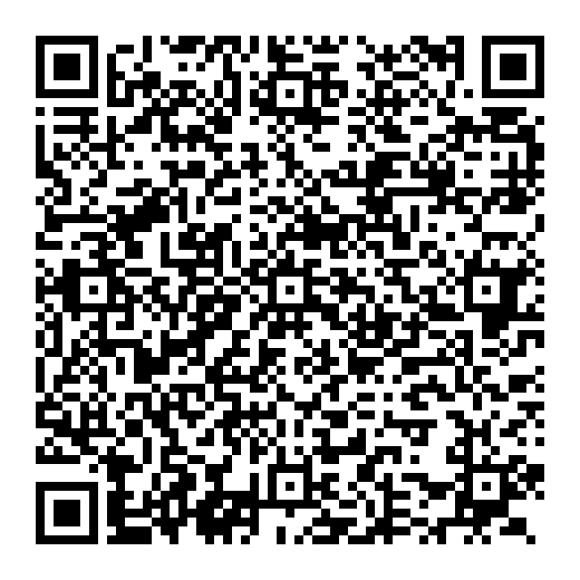
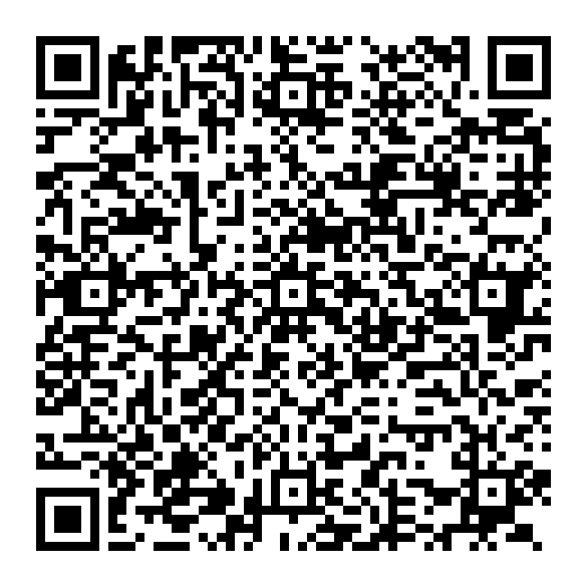
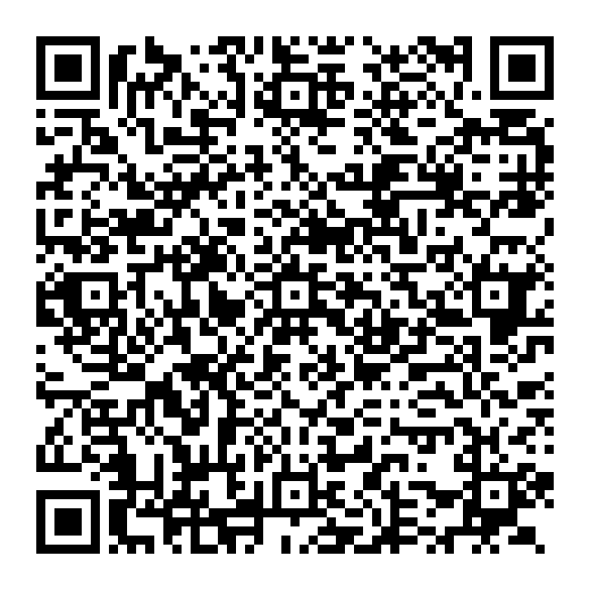

Mở app → Quét QR → Lưu thay đổi → mở chi tiết thùng → Thiết lập → xác nhận chiều cao. QR dùng lại sau mỗi lần đóng/mở mô phỏng.

smartbin-7c91a2-01
Khu A · Rác ít, mùi thấp

smartbin-7c91a2-02
Khu B · Gần đầy, mùi thấp

smartbin-7c91a2-03
Khu C · Rác vừa, mùi cao
In mã trên nền trắng, giữ nguyên viền trắng. Chiều cao trên QR là số đo mẫu; thiết bị chỉ lưu sau khi bạn xác nhận. Hướng dẫn chạy mô phỏng.